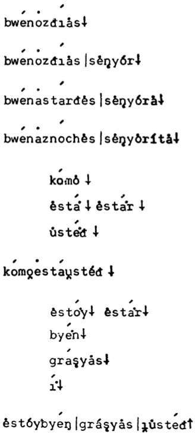

|  |
Good morning. |
[[bw\Men\moz\-d\Hi\las↓]] |
Buenos días. |
| Good morning, sir. |
[[bw\Men\moz\-d\Hi\las |s\le\,n\Lor↓]] |
Buenos días, señor. |
| Good afternoon, ma'am. |
[[bw\Men\mast\Har\-d\les |s\le\,ny\Lor\la↓]] |
Buenas tardes, señora. |
| Good afternoon, ma'am. |
[[bw\Men\mazn\Hoch\les |s\le\,ny\lorit\la↓]] |
Buenos noches, señorita. |
| how |
[[k\Mom\lo↓]] |
cómo |
| are (to be) |
[[\lest\Ma\.↓ \lest\Ma\.r↓]] |
está (estar) |
| you |
[[\lust\Me\.\-d↓]] |
usted |
| How are you? |
[[k\Mom\vo\mest\Ma\vust\Le\-d↓]] |
¿Cómo está usted? |
| (I) am (to be) |
[[\lest\Mo\.y↓ \lest\Ma\.r↓]] |
estoy (estar) |
| well |
[[by\Me\.n↓]] |
bien |
| thanks |
[[gr\Ma\,sy\las↓]] |
gracias |
| and |
[[\Mi\.↓]] |
y |
| I'm fine, thanks. How are you? |
[[\lest\Loy\-by\M\,n|gr\La\,sy\las|\vi\lust\Me\-d↑]] |
Estoy bien, gracias, ¿y usted? |